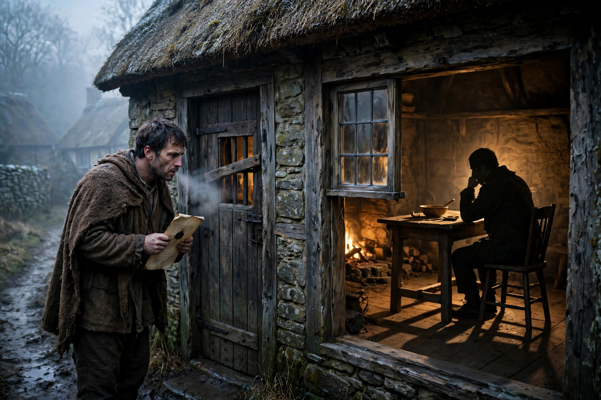

Disseisee — in medieval English land law, the person who has been wrongfully dispossessed of a freehold estate: put out of their seisin — their legal possession of the land — by force, threat, or trickery, with no judgment and no process. The one on the receiving end of a disseisin; the plaintiff in the assize of novel disseisin.
Stress the middle — dis-SEE-zee. Nine letters, and the S's outnumber everything: three S's, three E's, two I's, one D standing at the gate. English law usually names the doer of a thing. This word names the person it was done to — the tenant standing outside his own barred door, deed in hand, watching somebody else sit in his chair.
From Anglo-Norman disseisir, to dispossess: dis-, apart and undone, + seisir, to put in possession — plus the suffix -ee, the done-to ending. Also spelled disseizee.
A whole eviction in three pieces — tap each part:
Dis- unmakes it, seis- names it, -ee stands outside it: the whole grammar of being put out.
One wrong, one remedy, one pair of words — hold them together:
Disseisin: an ouster of the freehold. The disseisor came with force, or threats, or a trick — changed the lock, barred the door, moved in while you were at market — and you were out. No court, no writ, no judgment. Blackstone would later file it among the injuries to real property: the wrongful putting-out of the one seised of the freehold.
Henry II's answer, from 1166: the assize of novel disseisin — "recent dispossession." Twelve neighbors were sworn to answer one question: was this person disseised? If yes, the disseisee was put back first, and the arguments about who truly owned the land could happen later. Possession first, title second.
The law named both parties and sided, procedurally, with the loser of the scuffle: the disseisor held the land but not the law's sympathy; the disseisee held only a claim — and the fastest, cheapest remedy in the medieval world. For centuries, being the -ee beat being the -or.
The Assize of Clarendon gives every freeholder in England a royal remedy for fresh dispossession. Before it, a disseisee's options were a duel of writs that could outlive him, or taking the land back the same way he lost it. After it: a writ, a jury of neighbors, one question, and the sheriff put him back in. The disseisee becomes the best-protected plaintiff in the kingdom.
The treatises of Glanvill and Bracton build a whole jurisprudence on seisin — who has it, how it passes, how it is lost. The assize of novel disseisin becomes the workhorse of the royal courts, and with it a principle England keeps to this day: the law protects possession itself, even before it decides ownership. Every disseisee in the realm has a road back that runs through the king's court, not the lord's.
Blackstone's Commentaries set disseisin in its permanent place in the architecture of the law: an injury to real property, the wrongful putting-out of the one seised of the freehold. By then the old assize itself is fading — the action of ejectment does its work faster — but the word pair, disseisor and disseisee, is fixed in the books for good.
Nobody files an assize of novel disseisin anymore, and disseisee survives in law dictionaries and property casebooks — a fossil word. But its logic runs modern landlord-tenant law: the landlord who changes the locks without a court order has committed the disseisor's wrong, and the tenant put out on the pavement is the disseisee's direct descendant, with the same fast road back.
1. A disseisee is…
2. "Seisin" meant…
3. The disseisee's great remedy, from 1166, was…
4. The wrongful taker — the other half of the pair — was the…
You mine Blossom for prompt seeds — here's this one, ready to plant:

Tonight's render — spot the quiet impossibility.